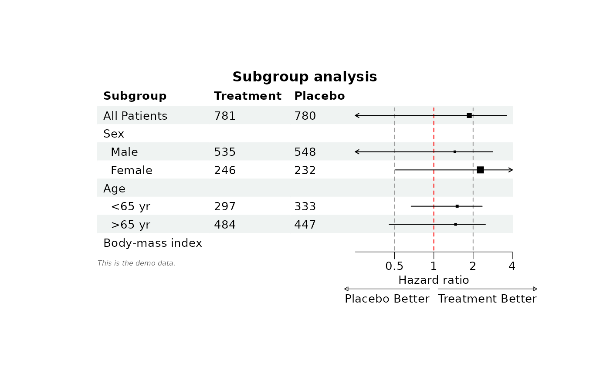
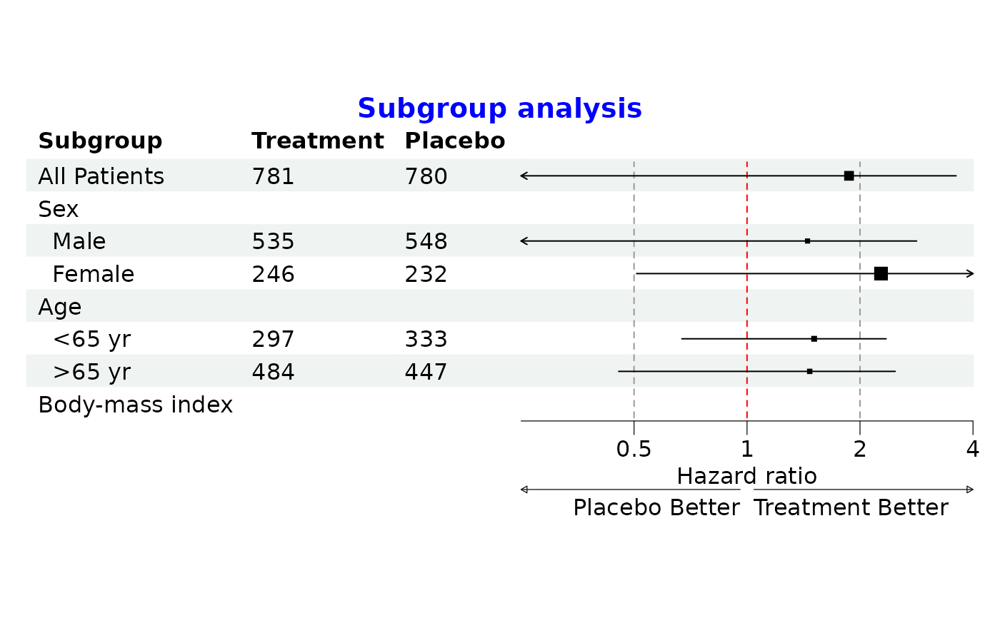
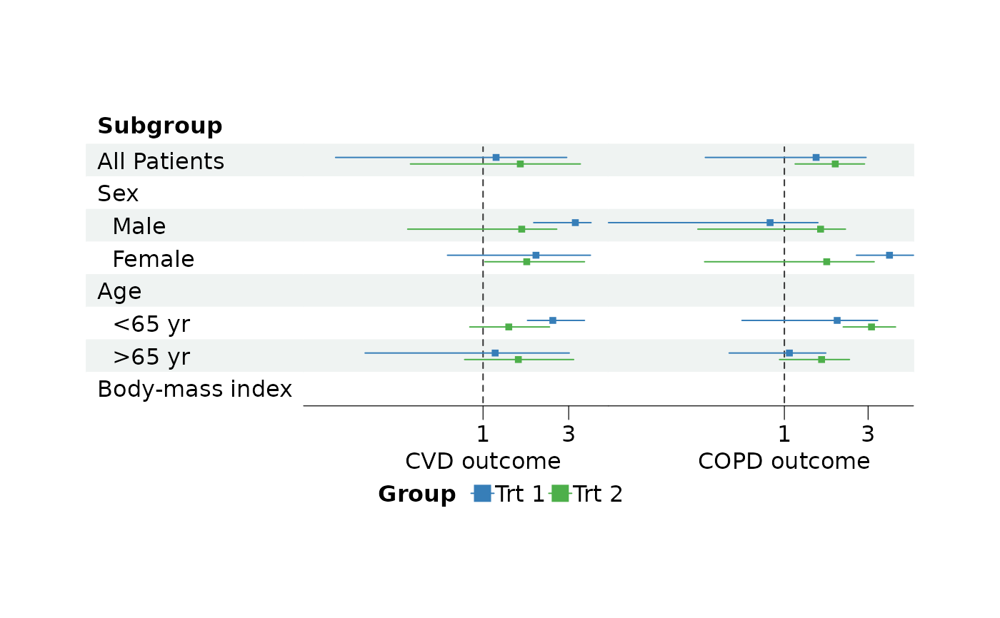

Set the look of a forest plot. Each part of the plot takes a
gpar object, and only the settings given are changed,
everything else keeps its default. A style can be passed to the theme
argument of forest or applied to a plot with
set_style, so the same style can be reused for many plots.
To change some settings of a plot and keep the rest, give them to
set_style instead.
The text itself, such as the title or the legend labels, is set with
set_labs.
Usage
forest_style(
base_size = 12,
base_family = "",
parse = NULL,
ci = gpar(),
ci_pch = 15,
ci_t_height = NULL,
summary = gpar(),
ref_line = gpar(),
vline = gpar(),
xaxis = gpar(),
xlab = gpar(),
xlab_adjust = c("refline", "center"),
title = gpar(),
title_just = c("left", "right", "center"),
footnote = gpar(),
arrow = gpar(),
arrow_type = c("open", "closed"),
arrow_length = 0.05,
arrow_label_just = c("start", "end"),
legend = gpar(),
legend_position = c("right", "top", "bottom", "none"),
legend_ncol = 1,
legend_byrow = TRUE,
body = gpar(),
header = gpar(),
fit = c("none", "width", "both"),
...
)Arguments
- base_size
The size of text.
- base_family
The font family, the font of the device by default.
- parse
Whether text is read as plotmath expressions, see
plotmath. This applies to the title, x-axis labels, footnote, arrow labels and legend labels; text in the table cells is parsed withparseincoreandcolheadthrough.... By default only the footnote is parsed,TRUEparses all of them where the text is a valid expression andFALSEparses none.- ci
Confidence intervals,
col,fill,lty,lwdandalphaare used. Provide a vector for each group of a grouped forest plot.fillis only used ifci_pchis within15:25andalphamust be a single value; a small vertical line marks the point estimate if it is not 1.- ci_pch
Shape of the point estimation, reused for each group if a single value is given.
- ci_t_height
The height of the T end of the confidence intervals. No T end is drawn by default.
- summary
Diamond shaped summary confidence intervals,
colandfillare used.- ref_line
Reference line, its position is set with
ref_lineofforest.- vline
Vertical lines, their positions are set with
vlineofset_xaxis.lwd,ltyandcolcan be vectors with one value for each line.- xaxis
X-axis line, tick marks and tick labels.
- xlab
X-axis labels.
- xlab_adjust
Align the x-axis labels to the reference line
"refline"(default) or to the center of the x-axis"center".- title
Title.
- title_just
The justification of the title,
"left"(default),"right"or"center".- footnote
Footnote.
- arrow
Arrows and their labels.
- arrow_type
Type of the arrow head,
"open"(default) or"closed", seearrow.- arrow_length
The length of the arrow head, a
unitor a number in inches. The default is0.05inches.- arrow_label_just
Align the arrow labels to the starting point of the arrows
"start"(default) or to their ending point"end".- legend
Legend text.
- legend_position
Position of the legend,
"right"(default),"top","bottom"or"none"to hide the legend.- legend_ncol
The number of columns of the legend, see
legendGrob.- legend_byrow
Whether the rows of the legend are filled first, see
legendGrob.- body
Text and background of the body of the table, a short form of
corein...:col,fontsize,fontface,fontfamily,cex,lineheightandalphaare used for the text,fillfor the background. A vector is recycled over the rows.- header
Text and background of the header of the table, a short form of
colheadin..., same asbody.- fit
How the plot uses the space it is drawn in, for example the size given to
ggplot2::ggsaveor a panel ofpatchwork. With"none"(default) the plot keeps its natural size, the size given byget_wh, and is centred in the space. With"width"the CI columns take the free width, in proportion to their natural width, and become narrower when space is short."both"also shares the free height between the rows of the table. Text always keeps its size.- ...
Settings passed on to the theme of the table, see
tableGrob:corefor the body of the table andcolheadfor its header, each a list withfg_paramsfor the text andbg_paramsfor the background. For examplecore = list(fg_params = list(hjust = 1, x = 0.9))aligns the text of the body to the right.bodyandheaderabove are applied on top of them, so settings given in both places come frombodyandheader. The border of a cell takes the colour of its fill, so that there is no gap between the cells, unlessbg_paramsofcoreorcolheadgives it a colour.
Examples
library(grid)
# Read provided sample example data
dt <- read.csv(system.file("extdata", "example_data.csv", package = "forestploter"))
dt <- dt[1:8, ]
# NA to blank or NA will be transformed to character
dt$Treatment <- ifelse(is.na(dt$Treatment), "", dt$Treatment)
dt$Placebo <- ifelse(is.na(dt$Placebo), "", dt$Placebo)
# Add blank columns for the forest plot to display CI.
# Adjust the column width with space.
dt$` ` <- paste(rep(" ", 20), collapse = " ")
dt$` ` <- paste(rep(" ", 20), collapse = " ")
# A style that can be reused for other plots
st <- forest_style(base_size = 10,
ref_line = gpar(col = "red"),
vline = gpar(col = "grey60"),
footnote = gpar(col = "#636363", fontface = "italic"),
arrow_type = "closed",
title_just = "center")
# Add the axis and the text to the plot
p <- forest(dt[, c(1:3, 19)],
est = dt$est,
lower = dt$low,
upper = dt$hi,
sizes = dt$est,
ci_column = 4,
ref_line = 1,
style = st) |>
set_xaxis(x_trans = "log",
xlim = c(0.25, 4),
ticks_at = c(0.5, 1, 2, 4),
vline = c(0.5, 2)) |>
set_labs(title = "Subgroup analysis",
xlab = "Hazard ratio",
arrow = c("Placebo Better", "Treatment Better"),
footnote = "This is the demo data.") |>
scale_sizes(method = "range", range = c(0.3, 0.8))
plot(p)

# Change the style, let the CI column take the free width of the page and
# remove the footnote
p <- p |>
set_style(base_size = 12, title = gpar(col = "blue"), fit = "width") |>
set_labs(footnote = NULL)
plot(p)

# Grouped CIs in two columns, with a legend
p <- forest(dt[, c(1, 19, 20)],
est = list(dt$est_gp1, dt$est_gp2, dt$est_gp3, dt$est_gp4),
lower = list(dt$low_gp1, dt$low_gp2, dt$low_gp3, dt$low_gp4),
upper = list(dt$hi_gp1, dt$hi_gp2, dt$hi_gp3, dt$hi_gp4),
ci_column = c(2, 3),
ref_line = 1,
nudge_y = 0.2,
style = forest_style(ci = gpar(col = c("#377eb8", "#4daf4a")),
legend_position = "bottom")) |>
set_xaxis(x_trans = "log", xlim = list(c(0.1, 5), NA)) |>
set_labs(xlab = c("CVD outcome", "COPD outcome"),
legend_title = "Group",
legend_labels = c("Trt 1", "Trt 2"))
plot(p)
